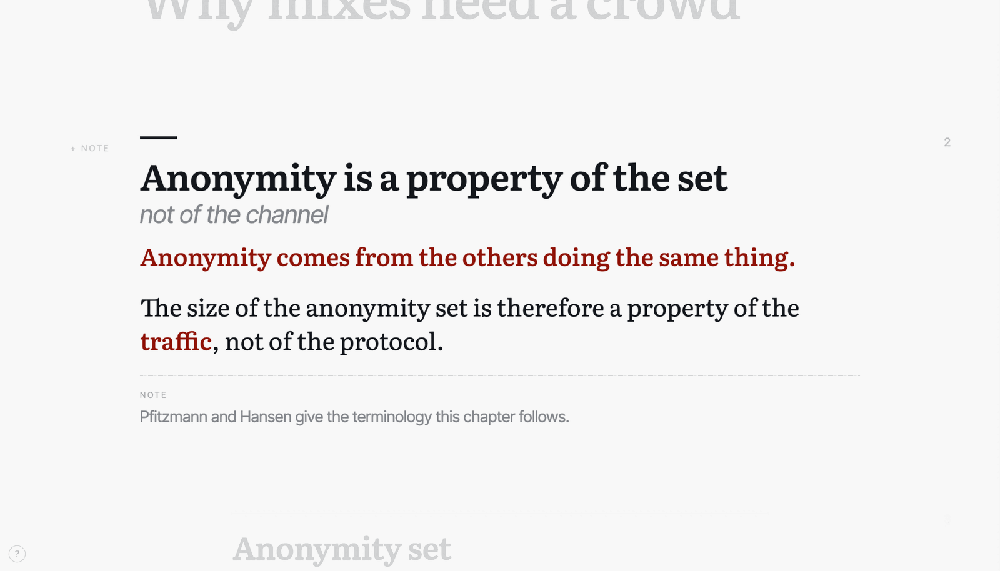
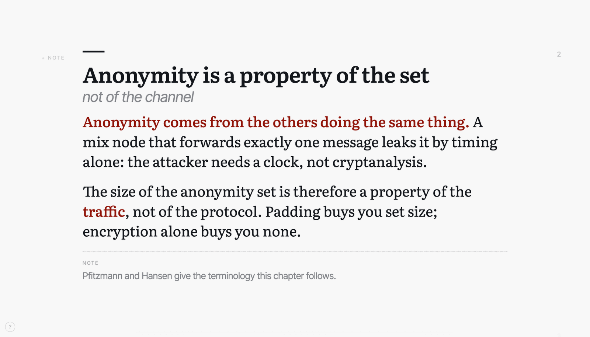
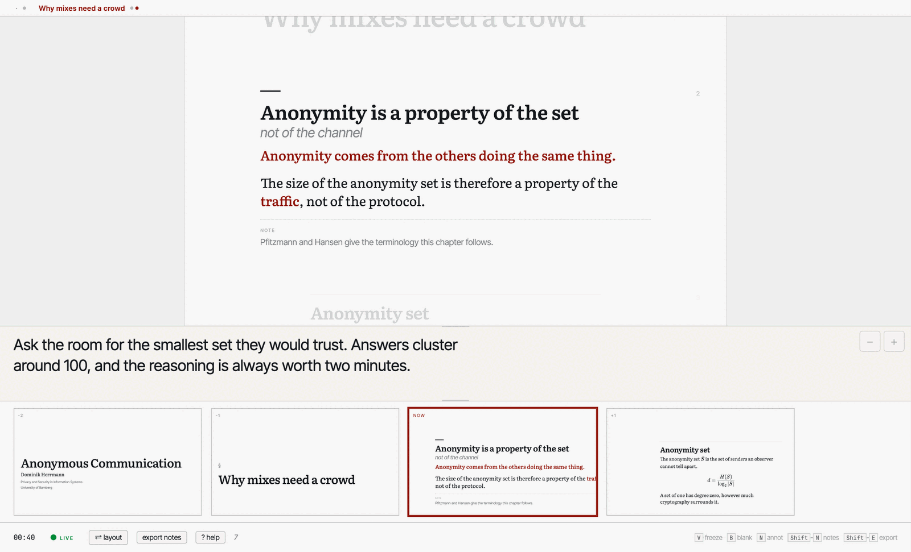
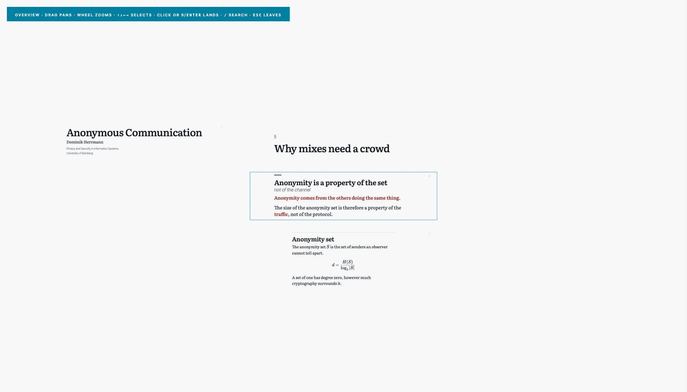
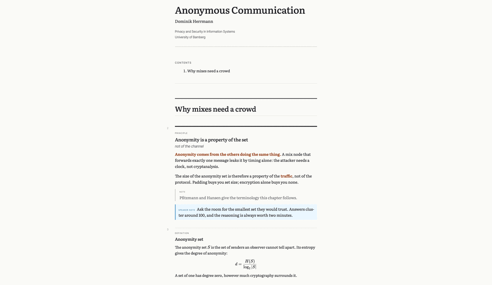

psi-slides
One Markdown file, four artefacts: the projection for the room, a presenter cockpit, a reading document, and a handout with the spoken notes folded in.
What it does
Everything below comes from this one chunk of Markdown. Nothing here was authored twice.
## principle: Anonymity is a property of the set | not of the channel {.wide #anon-set}
**Anonymity comes from the others doing the same thing.** A mix node that
forwards exactly one message leaks it by timing alone: the attacker needs a
clock, not cryptanalysis.
The size of the anonymity set is therefore a property of the **traffic**, not
of the protocol. Padding buys you set size; encryption alone buys you none.
::: margin
Pfitzmann and Hansen give the terminology this chapter follows.
:::
> note: Ask the room for the smallest set they would trust. Answers cluster
> around 100, and the reasoning is always worth two minutes.



> note: from the source sits under the stage where only you
can read it; the strip shows what is coming. Both windows stay in step over
postMessage, with no server between them.

print-notes.html: the same text as a document,
with the spoken note folded in under its chunk.The four views
Two lectures to open them from: the short example above (39 lines of Markdown, source), or the tutorial, a self-referential tour that explains the tool by being the tool.
| Short example | Tutorial | |
|---|---|---|
| The projection | audience.html | audience.html |
| The cockpit | speaker.html | speaker.html |
| The document | print.html | print.html |
| With the notes | print-notes.html | print-notes.html |
| Also published: the 36-chunk python-intro lecture (document). | ||
Start with the projection. Arrow keys navigate, Space reveals, C toggles collapse, O (the letter, not zero) opens the overview board, ? lists everything. Opening the cockpit from a link shows the layout but syncs with nothing – press S inside the projection to spawn a connected one.
file:// as from this server.
Documentation
- How psi-slides compares – Beamer, reveal.js, Quarto, Marp, Slidev, PowerPoint and friends, in both directions, including where psi-slides loses.
Source
github.com/UBA-PSI/psi-slides – the README explains the format, what the tool is good at, and what it is not.